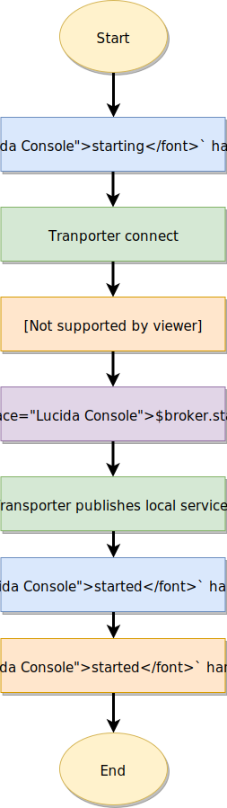
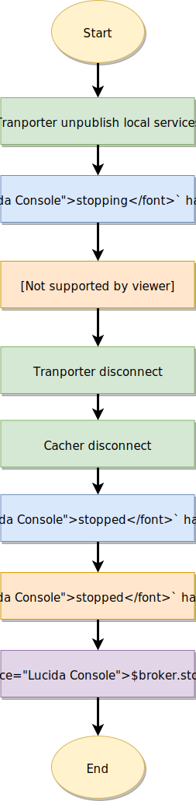

Lifecycle
Broker lifecycle
This section describes what happens when the broker is starting & stopping.
Starting logic
The broker starts transporter connecting but it doesn’t publish the local service list to remote nodes. When it’s done, it starts all services (calls service started handler). Once all services start successfully, broker publishes the local service list to remote nodes. Hence remote nodes send requests only after all local service are started properly.

Avoid deadlocksDead-locks can be made when two services wait for each other. E.g.:
usersservice hasDependencies: []string{"posts"}andpostsservice hasdependencies: []string{"users"}.
Stopping logic
When you call broker.Stop() or stop the process, at first broker notify the remote nodes, so they can route the requests to other instances instead of services under stopping. Next, the broker starts stopping all local services. After that, the transporter disconnects.

Service lifecycle
This section describes what happens when a service is starting & stopping and how you should use the lifecycle event handler.
created event handler
It is called when the service instance is created (e.g.: at broker.Publish()
moleculer.ServiceSchema{ |
started event handler
It is triggered when the broker starts all local services. Use it to connect to database, listen servers…etc. In this case the gateway is starting a http server.
type HttpService struct { |
stopped event handler
It is called when the broker is stopping all local services. Use it to close and release any resources your service might be using. Files, db, http servers etc.
func (svc *HttpService) Stopped(context moleculer.BrokerContext, schema moleculer.ServiceSchema) { |